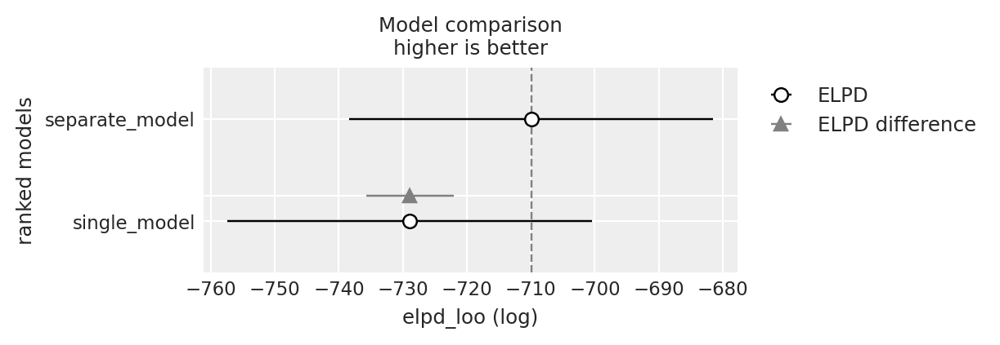

import os
import itertools
import logging
import pandas as pd
import numpy as np
import matplotlib.pyplot as plt
import arviz as az
from scipy import stats
import bambi as bmb
import cmdstanpy
from cmdstanpy import CmdStanModel
cmdstanpy.utils.get_logger().setLevel(logging.ERROR)
import networkx as nx
import warnings
warnings.simplefilter(action="ignore")108 Analisi dinamica delle sequenze di apprendimento
Prerequisiti
- Leggere Analyzing sequence data with Markov chain models in scientific experiments di Paxinou et al. (2021).
- Leggere l’Appendice Q.
Concetti e competenze chiave
Preparazione del Notebook
seed: int = sum(map(ord, "stan_paxinou"))
rng: np.random.Generator = np.random.default_rng(seed=seed)
az.style.use("arviz-darkgrid")
%config InlineBackend.figure_format = "retina"
# Get the home directory
home_directory = os.path.expanduser("~")
# Construct the path to the Quarto project directory
project_directory = os.path.join(home_directory, '_repositories', 'psicometria')108.1 Introduzione
L’obiettivo di questo capitolo è implementare il modello basato sulle catene di Markov proposto da Paxinou et al. (2021) per valutare l’efficacia di tre diverse strategie di insegnamento.
108.2 La Modellizzazione delle Sequenze dell’Apprendimento
La ricerca di Paxinou et al. (2021) si concentra sull’acquisizione di competenze pratiche dopo l’addestramento attraverso una metodologia specifica. In particolare, i partecipanti vengono addestrati a utilizzare un microscopio fotonico, lo strumento di base in un laboratorio di biologia. Vengono formati attraverso tre diversi metodi di insegnamento. Il T-Group ha partecipato a una dimostrazione tradizionale in presenza dell’esperimento di microscopia, il V-Group ha guardato un video didattico sull’esperimento di microscopia, e il VR-Group ha interagito con il microscopio simulato in un ambiente VR per eseguire l’esperimento di microscopia.
Nel presente tutorial considereremo solo i due metodi che producono i risultati più estremi nello studio di Paxinou et al. (2021): il T-Group, che qui sarà chiamato condizione 1, e il VR-Group, che corrisponde alla condizione 2.
Nello studio di Paxinou et al. (2021), ogni studente doveva eseguire individualmente l’esperimento di microscopia, che era suddiviso in 13 fasi. Non sapere come eseguire un passaggio portava al fallimento della prova, poiché non era possibile passare al passaggio successivo senza aver completato quello corrente. Fortunatamente, i supervisori di laboratorio, negli ambienti di laboratorio fisici, o gli avatar e i pulsanti di aiuto/suggerimento, nei sistemi di tutoraggio intelligente come gli ambienti VR, offrivano agli studenti una seconda possibilità e la capacità di andare avanti. Basandosi su ciò, nello studio di Paxinou et al. (2021), la performance di ogni studente in ciascuno dei 13 passaggi veniva valutata secondo 3 categorie: A corrisponde all’azione “Ho completato il passaggio facilmente”; B corrisponde all’azione “Ho eventualmente completato il passaggio, ma con difficoltà”; C corrisponde all’azione “Non sono riuscito a completare il passaggio da solo, quindi ho chiesto aiuto (al supervisore o a un compagno di studi)”. Queste 3 diverse valutazioni della performance in ogni passaggio definiscono i tre stati che costituiranno la catena di Markov.
I dati corrispondono dunque alla sequenza di 13 stati per ogni studente. Nella presente analisi, lo stato A è codificato come 1, lo stato B come 2, e lo stato C come 3. Quindi, per esempio, per un ipotetico studente, la sequenza delle valutazioni registrate nei 13 passaggi potrebbe dare origine alla seguente catena di Markov: [1, 1, 1, 1, 1, 1, 1, 1, 1, 1, 3, 2, 1].
Lo scopo dello studio, e in questo tutorial, è determinare se esiste una differenza nell’apprendimento tra il T-Group (condizione 1) e il VR-Group (condizione 2) e, in caso affermativo, se l’apprendimento procede in modo più fluido in una di queste due condizioni.
108.3 Implementazione
Dai dati empirici raccolti, Paxinou et al. (2021) stima tre matrici di transizione. Qui considereremo solo le matrici di transizione relative ai gruppi T e VR.
Utilizzando queste due matrici di transizione, genereremo le sequenze di stati di 50 studenti nella condizione T e di 50 studenti nella condizione VR. Analizzeremo i dati con due modelli. Il modello paxinou_single_transition_model.stan ignora la differenza tra i due gruppi e stima una singola matrice di transizione per gli stati A, B e C dai dati dei 100 soggetti. Il modello paxinou_separate_transition_matrices_model.stan stima due matrici di transizione per gli stati A, B e C, una per ciascun gruppo (T e VR). Attraverso l’utilizzo delle tecniche di validazione incrociata LOO, determineremo quale modello descrive meglio i dati.
108.3.1 Simulazione dei Dati
Simuliamo i dati ipotizzando la presenza di tre stati (A, B, C) e utilizzando le matrici di transizione per le condizioni T e VR riportate da Paxinou et al. (2021). Per gli scopi presenti, non è necessario capire nei dettagli come questo viene ottenuto.
def generate_markov_chain_data(transition_matrix, initial_state, steps, subjects):
states = ["A", "B", "C"]
data = []
for _ in range(subjects):
current_state = initial_state
state_sequence = [
states.index(current_state) + 1
] # Convert state to integer (1-based index)
for _ in range(steps - 1):
current_state = np.random.choice(
states, p=transition_matrix[states.index(current_state)]
)
state_sequence.append(states.index(current_state) + 1)
data.append(state_sequence)
return data
# Transition matrices for the two conditions
transition_matrix_condition1 = [
[0.776, 0.128, 0.096], # Probabilities for transitions from state A
[0.738, 0.167, 0.095], # Probabilities for transitions from state B
[0.630, 0.259, 0.111], # Probabilities for transitions from state C
]
transition_matrix_condition2 = [
[0.866, 0.086, 0.048], # Probabilities for transitions from state A
[0.516, 0.452, 0.032], # Probabilities for transitions from state B
[0.900, 0.100, 0.000], # Probabilities for transitions from state C
]
# Number of steps (trials) in the experiment
steps = 13
# Number of subjects
subjects = 50
# Initial state for each subject
initial_state = "A"
# Generate data for both conditions
data_condition1 = generate_markov_chain_data(
transition_matrix_condition1, initial_state, steps, subjects
)
data_condition2 = generate_markov_chain_data(
transition_matrix_condition2, initial_state, steps, subjects
)Sistemiamo i dati in un dizionario come richiesto da Stan.
# Create the data dictionary for the Stan models
stan_data = {
"N": 3, # Number of states (A, B, C)
"M1": len(data_condition1), # Number of subjects in condition 1
"M2": len(data_condition2), # Number of subjects in condition 2
"L": steps, # Length of each sequence (number of trials)
"y1": data_condition1, # Data for condition 1
"y2": data_condition2, # Data for condition 2
}Stampiamo i dati di due soggetti simulati nella condizione 1.
print(stan_data["y1"][0:2])[[1, 1, 1, 1, 1, 2, 1, 1, 2, 1, 1, 1, 1], [1, 1, 2, 1, 1, 1, 1, 1, 1, 1, 1, 1, 1]]108.3.2 Modello Baseline
Implementiamo ora in Stan il modello che non distingue tra le condizioni T e VR.
stan_file = os.path.join(
project_directory, "stan", "paxinou_single_condition_model.stan"
)
model_single = CmdStanModel(stan_file=stan_file)
print(model_single.code())data {
int<lower=1> N; // number of states
int<lower=1> M1; // number of subjects in condition 1
int<lower=1> M2; // number of subjects in condition 2
int<lower=1> L; // length of each sequence
array[M1, L] int<lower=1, upper=N> y1; // observed sequences for condition 1
array[M2, L] int<lower=1, upper=N> y2; // observed sequences for condition 2
}
parameters {
array[N] simplex[N] P; // shared transition matrix for all data
}
model {
for (m in 1 : M1) {
for (l in 2 : L) {
y1[m, l] ~ categorical(P[y1[m, l - 1]]);
}
}
for (m in 1 : M2) {
for (l in 2 : L) {
y2[m, l] ~ categorical(P[y2[m, l - 1]]);
}
}
}
generated quantities {
array[M1 * (L - 1) + M2 * (L - 1)] real log_lik; // combined log likelihoods for all observations
int idx = 1;
// Compute log likelihoods for condition 1
for (m in 1 : M1) {
for (l in 2 : L) {
log_lik[idx] = categorical_lpmf(y1[m, l] | P[y1[m, l - 1]]);
idx += 1;
}
}
// Compute log likelihoods for condition 2
for (m in 1 : M2) {
for (l in 2 : L) {
log_lik[idx] = categorical_lpmf(y2[m, l] | P[y2[m, l - 1]]);
idx += 1;
}
}
}
Questo modello utilizza una catena di Markov per analizzare il progresso degli studenti attraverso diversi stati di apprendimento sotto due differenti condizioni di insegnamento. L’obiettivo è stimare una singola matrice di transizione che rappresenti come gli studenti si spostano tra vari stati di apprendimento, indipendentemente dalla condizione di insegnamento.
Le componenti principali del modello sono:
- Stati di Apprendimento: A: “Ho completato il passaggio facilmente”; B: “Ho eventualmente completato il passaggio, ma con difficoltà”; C: “Non sono riuscito a completare il passaggio da solo, quindi ho chiesto aiuto”.
- Sequenze di Apprendimento: Serie di stati attraversati da ciascuno studente durante l’esperimento.
- Matrice di Transizione: Descrive le probabilità di passare da uno stato all’altro.
I dati in input hanno la seguente struttura:
N: Numero di stati di apprendimento possibili.M1eM2: Numero di studenti per ciascuna condizione di insegnamento.L: Numero di passi dell’esperimento che ogni studente deve completare.y1ey2: Sequenze osservate di stati per gli studenti nelle due condizioni di insegnamento.
Esaminiamo ora il funzionamento del modello. La matrice di transizione P è la componente chiave. Ogni riga di P rappresenta uno stato attuale, con i valori che indicano le probabilità di passare agli altri stati. Il modello presuppone che queste probabilità siano uguali per entrambe le condizioni di insegnamento.
Il processo inizia con una stima iniziale di P. Il modello esamina le sequenze di stati di ogni studente per entrambe le condizioni, calcolando la probabilità di ogni transizione osservata usando P. Successivamente, aggiorna P per massimizzare la probabilità complessiva di tutte le sequenze osservate. Questo processo iterativo continua fino a trovare la migliore stima possibile di P.
La matrice P è costituita da righe che rappresentano distribuzioni categoriali per ciascuno stato attuale. La distribuzione categorical è una generalizzazione della distribuzione binomiale per più categorie, permettendo di modellare esiti con più di due possibili risultati (come A, B, C), mantenendo la somma delle probabilità pari a 1.
Il cuore del modello è costituito dall’istruzione y1[m, l] ~ categorical(P[y1[m, l - 1]]);. Questa istruzione modella la probabilità di osservare una determinata transizione di stato all’interno di una sequenza di apprendimento:
y1[m, l]: Stato osservato per lo studentemal passol.categorical: Distribuzione di probabilità discreta per modellare eventi con diversi esiti.P[y1[m, l - 1]]: Seleziona la riga della matricePcorrispondente allo stato precedente, contenente le probabilità di transizione agli altri stati.
L’istruzione y1[m, l] ~ categorical(P[y1[m, l - 1]]);:
- Simula la probabilità che lo studente
mpassi da uno stato all’altro tra il passol-1el. - Usa la riga di
Pcorrispondente allo stato precedente per determinare le probabilità di transizione. - Valuta quanto è probabile osservare la sequenza di stati
y1data la matriceP.
Questa istruzione assegna una probabilità alla transizione osservata, che Stan utilizza per aggiornare le stime dei parametri del modello, migliorando l’accuratezza complessiva della matrice P stimata.
Una volta chiarito il modello, eseguiamo il campionamento.
fit_single = model_single.sample(
data=stan_data,
iter_warmup=2_000,
iter_sampling=2_000,
seed=42,
show_progress=False,
show_console=False,
)# Run diagnostics and print results
diagnostic_info = fit_single.diagnose()
print(diagnostic_info)Processing csv files: /var/folders/s7/z86r4t9j6yx376cm120nln6w0000gn/T/tmp3kv6pme3/paxinou_single_condition_modeli6rc4wxk/paxinou_single_condition_model-20240826095506_1.csv, /var/folders/s7/z86r4t9j6yx376cm120nln6w0000gn/T/tmp3kv6pme3/paxinou_single_condition_modeli6rc4wxk/paxinou_single_condition_model-20240826095506_2.csv, /var/folders/s7/z86r4t9j6yx376cm120nln6w0000gn/T/tmp3kv6pme3/paxinou_single_condition_modeli6rc4wxk/paxinou_single_condition_model-20240826095506_3.csv, /var/folders/s7/z86r4t9j6yx376cm120nln6w0000gn/T/tmp3kv6pme3/paxinou_single_condition_modeli6rc4wxk/paxinou_single_condition_model-20240826095506_4.csv
Checking sampler transitions treedepth.
Treedepth satisfactory for all transitions.
Checking sampler transitions for divergences.
No divergent transitions found.
Checking E-BFMI - sampler transitions HMC potential energy.
E-BFMI satisfactory.
Effective sample size satisfactory.
Split R-hat values satisfactory all parameters.
Processing complete, no problems detected.
Convertiamo l’oggetto fit_sample in un formato compatibile con ArviZ.
fit_single_az = az.from_cmdstanpy(posterior=fit_single)Esaminiamo la matrice di transizione stimata dal modello.
# Access posterior samples for the shared transition matrix 'P'
P_samples = fit_single_az.posterior["P"].values
# P_samples likely have the shape: (chains, draws, N, N)
# where 'chains' is the number of chains, 'draws' is the number of samples, and N is the number of states (3 in this case)
# First, average over the chains axis (axis=0)
P_samples_mean_over_chains = np.mean(P_samples, axis=0)
# Then, average over the draws axis (axis=0)
P_mean = np.mean(P_samples_mean_over_chains, axis=0)
# The result is a 3x3 matrix
print("Estimated Transition Matrix (Mean):")
print(P_mean.round(2))Estimated Transition Matrix (Mean):
[[0.83 0.1 0.07]
[0.6 0.35 0.05]
[0.75 0.2 0.05]]108.4 Modello per Gruppi Separati
Esaminiamo ora il modello che assume diverse matrici di transizioni per i due gruppi.
stan_sep_tran_mat_file = os.path.join(
project_directory, "stan", "paxinou_separate_transition_matrices_model.stan"
)
model_separate = CmdStanModel(stan_file=stan_sep_tran_mat_file)
print(model_separate.code())data {
int<lower=1> N; // number of states
int<lower=1> M1; // number of subjects in condition 1
int<lower=1> M2; // number of subjects in condition 2
int<lower=1> L; // length of each sequence
array[M1, L] int<lower=1, upper=N> y1; // observed sequences for condition 1
array[M2, L] int<lower=1, upper=N> y2; // observed sequences for condition 2
}
parameters {
array[N] simplex[N] P1; // transition matrix for condition 1
array[N] simplex[N] P2; // transition matrix for condition 2
}
model {
// Likelihood for condition 1 using P1
for (m in 1 : M1) {
for (l in 2 : L) {
y1[m, l] ~ categorical(P1[y1[m, l - 1]]);
}
}
// Likelihood for condition 2 using P2
for (m in 1 : M2) {
for (l in 2 : L) {
y2[m, l] ~ categorical(P2[y2[m, l - 1]]);
}
}
}
generated quantities {
array[M1 * (L - 1) + M2 * (L - 1)] real log_lik; // combined log likelihoods for all observations
int idx = 1; // Index for combined log likelihoods array
// Compute log likelihoods for condition 1
for (m in 1 : M1) {
for (l in 2 : L) {
log_lik[idx] = categorical_lpmf(y1[m, l] | P1[y1[m, l - 1]]);
idx += 1;
}
}
// Compute log likelihoods for condition 2
for (m in 1 : M2) {
for (l in 2 : L) {
log_lik[idx] = categorical_lpmf(y2[m, l] | P2[y2[m, l - 1]]);
idx += 1;
}
}
}
A differenza del modello precedente, che stima una singola matrice di transizione per entrambe le condizioni, questo modello stima due matrici di transizione distinte: una per ciascuna condizione di insegnamento. L’obiettivo è vedere se e come le dinamiche di apprendimento differiscono tra le due condizioni.
Rispetto al modello con una singola matrice di transizione, il codice Stan per il modello con due matrici di transizione presenta alcune differenze fondamentali:
- Definisce due matrici di transizione distinte,
P1eP2, per rappresentare separatamente le probabilità di transizione per ciascuna condizione. - La verosimiglianza è calcolata separatamente per ciascuna condizione
Eseguiamo il campionamento.
fit_separate = model_separate.sample(
data=stan_data,
iter_warmup=2_000,
iter_sampling=2_000,
seed=42,
show_progress=False,
show_console=False,
)# Run diagnostics and print results
diagnostic_info = fit_separate.diagnose()
print(diagnostic_info)Processing csv files: /var/folders/s7/z86r4t9j6yx376cm120nln6w0000gn/T/tmp3kv6pme3/paxinou_separate_transition_matrices_model782l5f79/paxinou_separate_transition_matrices_model-20240826092027_1.csv, /var/folders/s7/z86r4t9j6yx376cm120nln6w0000gn/T/tmp3kv6pme3/paxinou_separate_transition_matrices_model782l5f79/paxinou_separate_transition_matrices_model-20240826092027_2.csv, /var/folders/s7/z86r4t9j6yx376cm120nln6w0000gn/T/tmp3kv6pme3/paxinou_separate_transition_matrices_model782l5f79/paxinou_separate_transition_matrices_model-20240826092027_3.csv, /var/folders/s7/z86r4t9j6yx376cm120nln6w0000gn/T/tmp3kv6pme3/paxinou_separate_transition_matrices_model782l5f79/paxinou_separate_transition_matrices_model-20240826092027_4.csv
Checking sampler transitions treedepth.
Treedepth satisfactory for all transitions.
Checking sampler transitions for divergences.
No divergent transitions found.
Checking E-BFMI - sampler transitions HMC potential energy.
E-BFMI satisfactory.
Effective sample size satisfactory.
Split R-hat values satisfactory all parameters.
Processing complete, no problems detected.
fit_separate_az = az.from_cmdstanpy(posterior=fit_separate)Esaminiamo le due matrici di transizione stimate dal modello.
# Access posterior samples for the transition matrices 'P1' and 'P2'
P1_samples = fit_separate_az.posterior["P1"].values
P2_samples = fit_separate_az.posterior["P2"].values
# P1_samples and P2_samples likely have the shape: (chains, draws, N, N)
# where 'chains' is the number of chains, 'draws' is the number of samples, and N is the number of states (3 in this case)
# First, average over the chains axis (axis=0) for both P1 and P2
P1_samples_mean_over_chains = np.mean(P1_samples, axis=0)
P2_samples_mean_over_chains = np.mean(P2_samples, axis=0)
# Then, average over the draws axis (axis=0) for both P1 and P2
P1_mean = np.mean(P1_samples_mean_over_chains, axis=0)
P2_mean = np.mean(P2_samples_mean_over_chains, axis=0)
# The result for each is a 3x3 matrix
print("Estimated Transition Matrix for Condition 1 (Mean):")
print(P1_mean.round(2))
print("\nEstimated Transition Matrix for Condition 2 (Mean):")
print(P2_mean.round(2))Estimated Transition Matrix for Condition 1 (Mean):
[[0.77 0.13 0.1 ]
[0.75 0.15 0.1 ]
[0.55 0.32 0.12]]
Estimated Transition Matrix for Condition 2 (Mean):
[[0.85 0.08 0.07]
[0.57 0.42 0.01]
[0.8 0.17 0.03]]Si noti la buona corrispondenza tra i valori stimati e i valori usati nella simulazione dei dati.
108.5 Valutazione e Confronto di Modelli
Eseguiamo il calcolo dei valori k di Pareto e la validazione incrociata Leave-One-Out (LOO-CV) utilizzando ArviZ per il modello di baseline.
loo_single = az.loo(fit_single_az)
print(loo_single)Computed from 8000 posterior samples and 1200 observations log-likelihood matrix.
Estimate SE
elpd_loo -728.89 28.51
p_loo 5.79 -
------
Pareto k diagnostic values:
Count Pct.
(-Inf, 0.5] (good) 1200 100.0%
(0.5, 0.7] (ok) 0 0.0%
(0.7, 1] (bad) 0 0.0%
(1, Inf) (very bad) 0 0.0%
Ripetiamo il processo per il modello che distingue tra i gruppi.
loo_separate = az.loo(fit_separate_az)
print(loo_separate)Computed from 8000 posterior samples and 1200 observations log-likelihood matrix.
Estimate SE
elpd_loo -709.93 28.46
p_loo 10.55 -
------
Pareto k diagnostic values:
Count Pct.
(-Inf, 0.5] (good) 1200 100.0%
(0.5, 0.7] (ok) 0 0.0%
(0.7, 1] (bad) 0 0.0%
(1, Inf) (very bad) 0 0.0%
Eseguiamo un confronto tra i due modelli.
df_comp_loo = az.compare({
"single_model": loo_single,
"separate_model": loo_separate
})
df_comp_loo| rank | elpd_loo | p_loo | elpd_diff | weight | se | dse | warning | scale | |
|---|---|---|---|---|---|---|---|---|---|
| separate_model | 0 | -709.926886 | 10.545689 | 0.000000 | 0.903335 | 28.458712 | 0.00000 | False | log |
| single_model | 1 | -728.893768 | 5.791815 | 18.966882 | 0.096665 | 28.513270 | 6.79972 | False | log |
_ = az.plot_compare(df_comp_loo, insample_dev=False)
Si noti che il rapporto tra elpd_diff e dse è maggiore di 2 e che il modello preferito è quello che distingue tra i gruppi. Questo indica che il modello che distingue tra i gruppi si adatta meglio ai dati. Nuovamente, questo non è sorprendente dato che i dati sono stati generati in questo modo. Ma la simulazione indica che, se questo fosse il meccanismo generatore dei dati, con 50 soggetti per gruppo sarebbe possibile distinguere tra i due modelli.
La prossima domanda è stabilire quale metodo d’insegnamento funzioni meglio. Per rispondere a questa domanda, calcoliamo la probabilità che transitare allo stato A sia maggiore nella condizione VR che nella condizione T.
# Extract posterior samples for transition matrices P1 and P2
P1_samples = fit_separate_az.posterior[
"P1"
].values # Transition matrix for condition 1 (T-Group)
P2_samples = fit_separate_az.posterior[
"P2"
].values # Transition matrix for condition 2 (VR-Group)
# Number of states (assumed to be 3)
num_states = 3
# Initialize lists to store the probabilities for each state transition
prob_better_performance = []
prob_worse_performance = []
# Check transitions to state A and from any state to state C
for i in range(num_states):
# Transition to state A (index 0)
P1_to_A = P1_samples[
:, :, i, 0
] # Probability of transitioning to state A in T-Group
P2_to_A = P2_samples[
:, :, i, 0
] # Probability of transitioning to state A in VR-Group
# Compute probability that the VR condition has a higher probability of transitioning to state A
prob_to_A_better = np.mean(P2_to_A > P1_to_A)
prob_better_performance.append(prob_to_A_better)
# Transition to state C (index 2)
P1_to_C = P1_samples[
:, :, i, 2
] # Probability of transitioning to state C in T-Group
P2_to_C = P2_samples[
:, :, i, 2
] # Probability of transitioning to state C in VR-Group
# Compute probability that the VR condition has a lower probability of transitioning to state C
prob_to_C_worse = np.mean(P2_to_C < P1_to_C)
prob_worse_performance.append(prob_to_C_worse)
# Print the results
print(
"Probability that VR condition has a higher probability of transitioning to state A:"
)
for i in range(num_states):
print(f"From state {i+1} to state A: {prob_better_performance[i]:.2f}")
print(
"\nProbability that VR condition has a lower probability of transitioning to state C:"
)
for i in range(num_states):
print(f"From state {i+1} to state C: {prob_worse_performance[i]:.2f}")Probability that VR condition has a higher probability of transitioning to state A:
From state 1 to state A: 1.00
From state 2 to state A: 0.00
From state 3 to state A: 0.89
Probability that VR condition has a lower probability of transitioning to state C:
From state 1 to state C: 1.00
From state 2 to state C: 0.77
From state 3 to state C: 0.81108.5.1 Interpretazione
Basandosi sui risultati ottenuti, vediamo di interpretare il significato di ogni probabilità nel contesto della simulazione e dello studio originale.
Dallo stato 1 allo stato A: 1.00. La probabilità è 1.00, il che indica che, in tutti i campioni posteriori, la condizione VR (Condizione 2) ha una probabilità più alta di passare dallo stato 1 (“Ho completato il passaggio facilmente”) allo stato A (“Ho completato il passaggio facilmente”) rispetto alla condizione T-Group (Condizione 1). Questo suggerisce che, una volta che i partecipanti nella condizione VR hanno completato con successo un passaggio, è più probabile che continuino a completare facilmente i passaggi successivi.
Dallo stato 2 allo stato A: 0.00. La probabilità è 0.00, il che indica che la condizione VR non ha una probabilità più alta di passare dallo stato 2 (“Ho finalmente completato il passaggio, ma con difficoltà”) allo stato A rispetto alla condizione T-Group. Questo suggerisce che quando i partecipanti stanno affrontando delle difficoltà (stato 2), nella condizione VR non sono più propensi rispetto alla condizione T-Group a passare a completare facilmente il passaggio successivo (stato A).
Dallo stato 3 allo stato A: 0.89. La probabilità è 0.89, il che indica che c’è l’89% di possibilità che la condizione VR abbia una probabilità più alta di passare dallo stato 3 (“Non sono riuscito a completare il passaggio da solo, quindi ho chiesto aiuto”) allo stato A rispetto alla condizione T-Group. Questo suggerisce che, anche quando i partecipanti chiedono aiuto (stato 3), è più probabile che nella condizione VR completino facilmente il passaggio successivo (stato A) rispetto alla condizione T-Group.
Calcoliamo la probabilità che la condizione VR abbia una probabilità più bassa di passare allo stato C:
Dallo stato 1 allo stato C: 1.00. La probabilità è 1.00, indicando che la condizione VR ha una probabilità costantemente più bassa di passare dallo stato 1 (“Ho completato il passaggio facilmente”) allo stato C (“Non sono riuscito a completare il passaggio da solo, quindi ho chiesto aiuto”) rispetto alla condizione T-Group. Questo suggerisce che i partecipanti nella condizione VR sono molto meno propensi a regredire dal completare facilmente un passaggio a dover chiedere aiuto.
Dallo stato 2 allo stato C: 0.77. La probabilità è 0.77, indicando una probabilità del 77% che la condizione VR abbia una probabilità più bassa di passare dallo stato 2 (“Ho finalmente completato il passaggio, ma con difficoltà”) allo stato C rispetto alla condizione T-Group. Questo suggerisce che i partecipanti nella condizione VR sono generalmente meno propensi a passare dal trovarsi in difficoltà al dover chiedere aiuto rispetto a quelli nella condizione T-Group.
Dallo stato 3 allo stato C: 0.81. La probabilità è 0.81, il che indica una probabilità dell’81% che la condizione VR abbia una probabilità più bassa di rimanere nello stato C o di passare a esso (“Non sono riuscito a completare il passaggio da solo, quindi ho chiesto aiuto”) rispetto alla condizione T-Group. Questo suggerisce che, anche quando i partecipanti chiedono aiuto, è meno probabile che continuino a dover chiedere aiuto nella condizione VR rispetto alla condizione T-Group.
I risultati mostrano che, complessivamente, i partecipanti nella condizione VR (Condizione 2) tendono ad avere risultati di performance migliori rispetto a quelli nella condizione T-Group (Condizione 1). In particolare:
Maggiore probabilità di completamento facile (Stato A): La condizione VR mostra una forte tendenza (probabilità 1.00 e 0.89) a portare a una performance migliore (passaggio allo stato A) rispetto alla condizione T-Group, specialmente dallo stato 3 (richiesta di aiuto) allo stato A (completamento facile).
Minore probabilità di necessità di aiuto (Stato C): La condizione VR mostra anche una tendenza (probabilità 1.00, 0.77 e 0.81) ad avere una minore probabilità di necessità di aiuto (passaggio allo stato C) in diversi scenari. Questo suggerisce che i partecipanti nella condizione VR sono meno propensi a finire per aver bisogno di aiuto, indicando una performance complessivamente migliore.
Questi risultati sono in linea con la conclusione dello studio originale che la condizione VR migliora la performance riducendo la probabilità di dover chiedere aiuto e aumentando le possibilità di completare facilmente i compiti.
108.6 Riflessioni Conclusive
In questo tutorial abbiamo esplorato l’utilizzo di modelli a catena di Markov per valutare la performance degli studenti in esperimenti scientifici. Attraverso una simulazione basata sui dati di Paxinou et al. (2021), abbiamo confrontato l’efficacia di due diverse metodologie di insegnamento: il tradizionale tutorial in laboratorio e l’interazione con un software educativo in realtà virtuale (VR).
I risultati empirici ottenuti da Paxinou et al. (2021) indicano che la metodologia di apprendimento basata sulla realtà virtuale è più efficace nell’aiutare gli studenti ad acquisire le competenze sperimentali necessarie. Gli studenti del gruppo VR hanno dimostrato una maggiore probabilità di completare i passaggi dell’esperimento facilmente e senza bisogno di assistenza rispetto agli studenti del gruppo T (tradizionale) e del gruppo V (video). In questo tutorial, abbiamo mostrato come sia possibile analizzare dati simili a quelli discussi da Paxinou et al. (2021) utilizzando modelli di catene di Markov di primo livello.
Paxinou et al. (2021) commentano i loro risultati affermando che i modelli basati sulle catene di Markov sono strumenti utili non solo per valutare le performance e costruire funzioni di punteggio, ma anche per l’analisi delle competenze acquisite. Inoltre, questi modelli possono essere impiegati per prevedere e intervenire efficacemente durante il processo educativo. I risultati suggeriscono che l’analisi delle catene di Markov può fornire valutazioni dinamiche e personalizzate delle competenze degli studenti, permettendo agli educatori di intervenire in modo mirato e fornire feedback tempestivi ed efficaci.
108.7 Esercizi
Esercizio 108.1 Un altro studio interessante che utilizza questo approccio è quello di Zanesco (2020). I flussi di pensiero variano nel contenuto da un momento all’altro, e questi schemi temporali sono ritenuti fondamentali per comprendere il mind wandering. Tuttavia, sono stati proposti pochi metodi analitici in grado di considerare sia il contenuto sia l’ordine temporale delle risposte categoriche che possono essere campionate relativamente a questa esperienza nel tempo. Il flusso di pensiero raramente segue lo stesso percorso per un individuo, ma mostra comunque con una certa prevedibilità nel contesto di un compito cognitivo. In questo studio, i partecipanti hanno selezionato tra 8 opzioni possibili per descrivere se la loro attenzione fosse attualmente concentrata sul “compito” (opzione 1); se stessero sperimentando pensieri rivolti alla “performance e valutazione del compito” (opzione 2); pensieri riguardanti le “preoccupazioni quotidiane” (opzione 3); pensieri sul proprio stato “fisico, cognitivo o emotivo” (opzione 4); pensieri su “preoccupazioni personali” (opzione 5); pensieri fantasiosi e “sogni a occhi aperti” (opzione 6); pensieri sugli stimoli presenti nell’“ambiente esterno” (opzione 7); e “altri” pensieri non descritti dalle altre categorie (opzione 8). Zanesco (2020) ha applicato metodi di analisi sequenziale, utilizzando il modello di Markov di primo ordine, a questi campioni di pensiero categoriale, e i risultati hanno rivelato una certa misura di ordine e coerenza nei flussi di pensiero degli individui.
Un possibile esercizio consiste nel simulare i dati utilizzando gli 8 stati considerati da Zanesco (2020) e la matrice di transizione riportata nel suo studio. Successivamente, si può applicare il modello di Markov di primo ordine per stimare la matrice di transizione dai dati simulati. Seguendo l’approccio di Zanesco (2020), i risultati ottenuti possono poi essere interpretati per approfondire la comprensione del fenomeno del mind wandering.
Informazioni sull’Ambiente di Sviluppo
%load_ext watermark
%watermark -n -u -v -iv -w Last updated: Sun Aug 25 2024
Python implementation: CPython
Python version : 3.12.4
IPython version : 8.26.0
bambi : 0.14.0
logging : 0.5.1.2
numpy : 1.26.4
pandas : 2.2.2
arviz : 0.18.0
scipy : 1.14.0
cmdstanpy : 1.2.4
matplotlib: 3.9.1
Watermark: 2.4.3